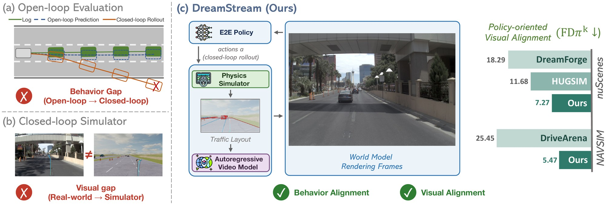
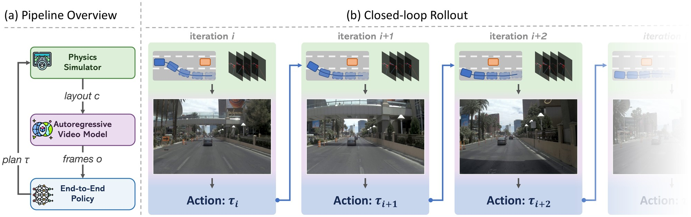
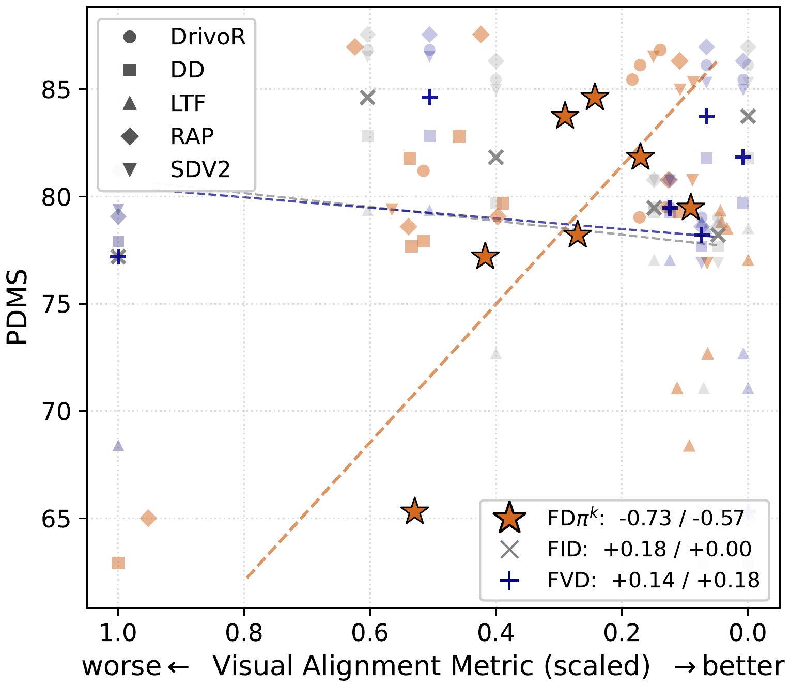
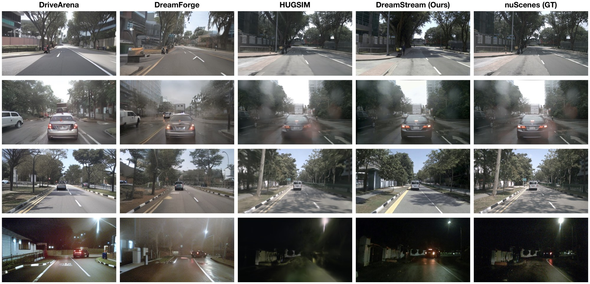
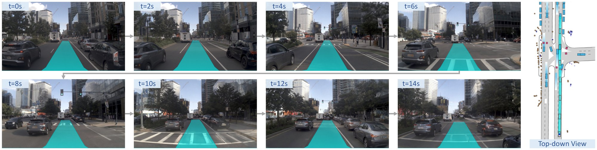
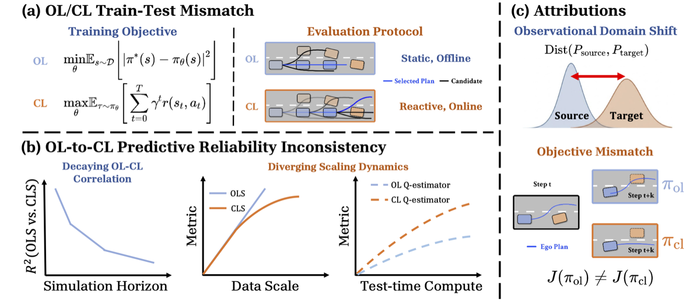

DreamStream: Towards Policy-Oriented
Generative Simulation for End-to-End Driving
CoRL 2026
Ziyang Leng* 1 , Sicheng Mo* 1 , Seth Z. Zhao 1 , Haoyuan Cai 1
Yu Zeng 2 , Rowan McAllister 2 , Bolei Zhou 1
1 University of California, Los Angeles , 2 Toyota Research Institute
*Equal contribution.

TL;DR
- DreamStream is a generative closed-loop simulator for end-to-end driving.
1. 🎬 Generative closed-loop simulator. DreamStream couples a physics simulator with an autoregressive video model distilled from a pretrained video model, delivering diverse visual and behavioral realism.
2. 📏 FDπk, a policy-oriented visual alignment metric. Measured by the Fréchet distance over the scene-context features that E2E policies use to generate decisions, it exhibits stronger correlation with the driving performance than FID and FVD. Under FDπk, DreamStream improves by 1.6× on nuScenes and 4.7× on NAVSIM.
3. 🚦 Navhard-CL benchmark. Built on DreamStream, it turns the non-reactive NAVSIM navhard benchmark into reactive closed-loop, with safety-critical adversarial behaviors and diverse weather variations. It exposes failure modes prior closed-loop benchmarks overlook: scorer bias, proposal-coverage failure, and visual brittleness.
DreamStream Overview

DreamStream consists of closed-loop interaction between three components: a physics simulator that maintains the symbolic states (agents poses, HD map), an autoregressive video model that renders the camera frames, and the E2E driving policy under evaluation. Each closed-loop iteration proceeds in three steps:
(1) Plan: the policy produces a planned trajectory from the most recent camera frames.
(2) Simulate: the simulator executes the plan and provides traffic-layout condition (perspective projection of the HD map and agents 3D boxes) for each new state.
(3) Generate: conditioned on the layouts and a scene text prompt, the video model autoregressively generates the next camera frames, using a KV cache of earlier frames to keep the scenario consistent over hundreds of frames.
Scenarios start from real-world driving logs, and surrounding agents can be controlled by IDM or adversarial policies. After the scenario terminates, the executed trajectory is scored with closed-loop metrics.
DreamStream Simulator Workflow.
FDπk: Policy-Oriented Visual Alignment
Perceptual metrics such as FID and FVD were designed for visual quality. Controllability metrics (3D detection, map segmentation) measure only one task-specific aspects of what human sees. FDπk instead measures from the policies’ perspective: for a driving policy, we extract the scene-context features it uses to generate actions from real camera frames and generated frames of the same scenes, and compute the Fréchet distance between the resulting feature distributions. This captures how much the simulator perturbs the visual information the policy uses to act. It is normalized per-policy and averaged across a panel of public E2E policies.
| Dataset | Method | FDπk ↓ | FID ↓ |
|---|---|---|---|
| nuScenes val | MagicDrive | 17.18 | 16.20 |
| Panacea | 31.46 | 16.96 | |
| Dreamland | 25.28 | 47.93 | |
| DriveArena* | 15.68 | 34.74 | |
| DreamForge* | 18.29 | 14.61 | |
| HUGSIM* | 11.68 | 27.95 | |
| DreamStream | 7.27 | 19.58 | |
| NAVSIM navtest | BridgeSim | 56.13 | 175.53 |
| DriveArena | 25.45 | 41.80 | |
| DreamStream | 5.47 | 11.78 |
FDπk between real and generated/rendered frames from simulators. * trained on the evaluation set. FID misranks visual alignment.

FDπk correlates strongly with driving performance (PDMS), whereas FID and FVD do not.

Qualitative comparison on nuScenes val. DreamStream preserves lane geometry, agent placement, and diverse appearance of the scenes.
Navhard-CL: A Closed-loop Benchmark
Navhard-CL turns the non-reactive, open-loop NAVSIM navhard benchmark into reactive closed-loop testing environments, with three scenario buckets:
(1) Navhard-Base: the 421 real-world navhard scenarios with reactive traffic.
(2) Navhard-AdvBehavior: safety-critical variants in which an adversarial agent maneuvers to provoke a collision, spanning five NHTSA pre-crash categories.
(3) Navhard-AdvWeather: the same scenarios re-rendered under 13 appearance conditions across lighting, weather, and road surface, yielding more than 5k scenario-appearance combinations.

A closed-loop rollout on Navhard-Base.
Navhard-Base
Navhard-AdvBehavior
Navhard-AdvWeather
Closed-loop Evaluation
| Policy | Simulator RGB | DriveArena | DreamStream |
|---|---|---|---|
| DrivoR | 42.32 | 38.92 | 46.21 |
| DiffusionDrive | 46.19 | 32.02 | 59.68 |
| DiffusionDriveV2 | 45.87 | 21.48 | 58.35 |
| LTF | 40.64 | 38.27 | 53.28 |
Closed-loop driving score (DS) on Navhard-Base under three observation sources for the same simulator state.
Closed-loop Gap Analysis
Scorer bias
Learned scorers of E2E policies pick worse proposals due to scorer bias, and the gap widens under adversarial behaviors.
Proposal-coverage failure
The proposal set of E2E policies often contains no feasible recovery trajectory when deviating from the policy’s training distribution.
Visual brittleness
Lighting shifts and common weather barely change policy performance, but conditions that obscure the road surface degrade performance.
Reference
@inproceedings{leng2026dreamstream,
title={DreamStream: Towards Policy-Oriented Generative Simulation for End-to-End Driving},
author={Leng, Ziyang and Mo, Sicheng and Zhao, Seth Z. and Cai, Haoyuan and Zeng, Yu and McAllister, Rowan and Zhou, Bolei},
booktitle={Conference on Robot Learning (CoRL)},
year={2026}
}
Acknowledgement
This work is supported by the Toyota Research Institute. Seth Z. Zhao was supported by the Qualcomm Innovation Fellowship.
Relevant Work
